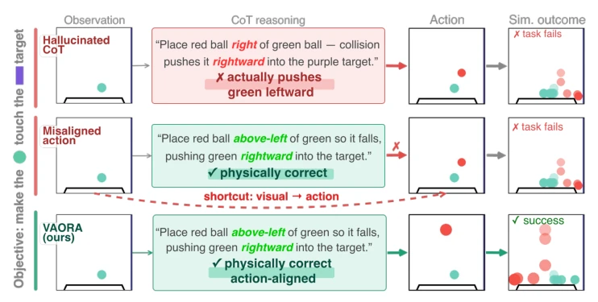
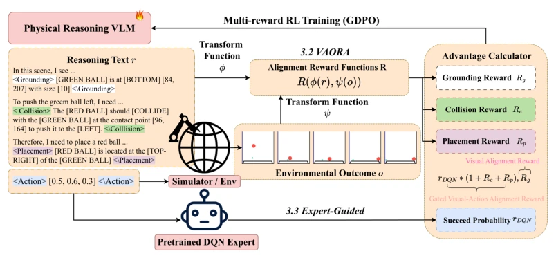
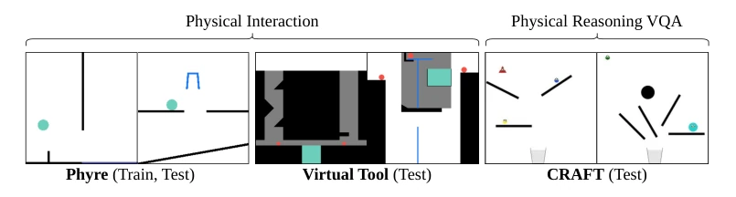
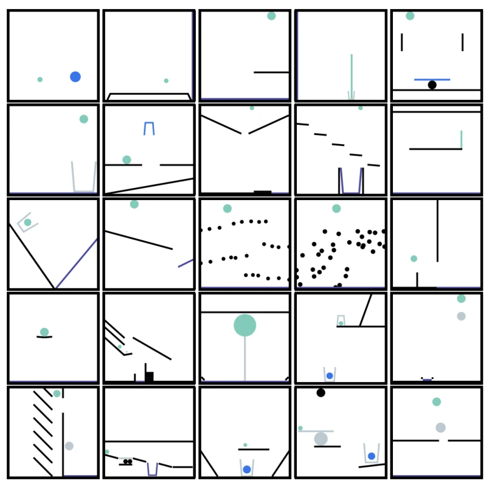
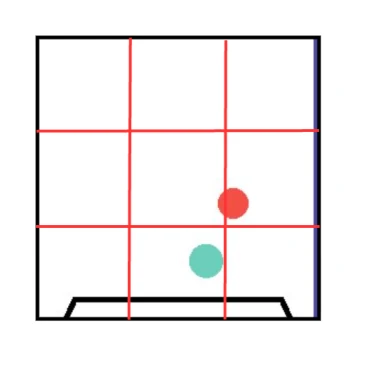
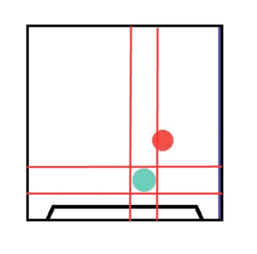
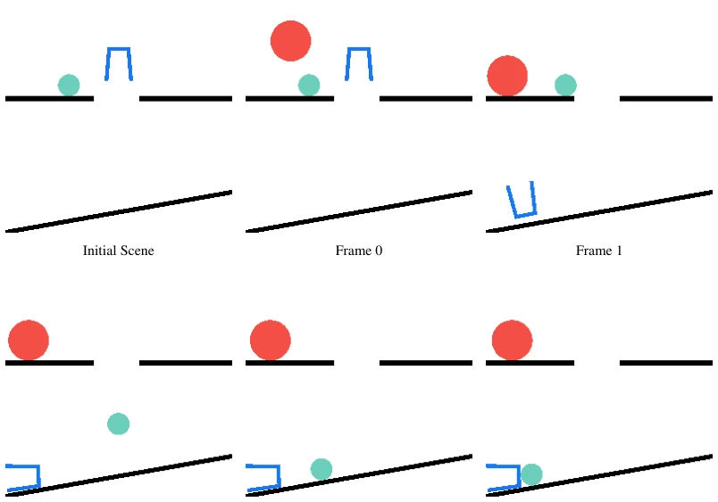
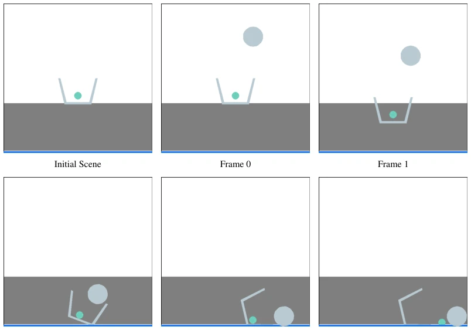
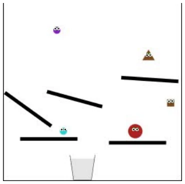

This paper attempts to equip the VLM's "physical brain" with a GPS to prevent it from fabricating information. The core of VAORA lies in using a reward function to forcibly align "thinking" and "doing", ensuring the model neither hallucinates during reasoning nor takes shortcuts in action while verbally stating physical laws. Although the performance on PHYRE is indeed impressive, even surpassing the DQN expert, relying on the dense rewards provided by the pre-trained DQN expert carries some suspicion of "using magic to defeat magic". If the DQN itself does not understand physics, would not VAORA deviate along with it? Furthermore, the single-step interaction setting appears too naive in complex physical scenarios; when encountering problems requiring multi-step trial and error, the model might still have to rely on guessing. However, identifying this pain point of the disconnect between CoT and physical reality is indeed commendable.
The core of embodied intelligence lies in generalization, but existing VLMs exhibit fragility in interactive physical reasoning. There are mainly two failure modes: first, Hallucinated CoT, where model-generated reasoning violates physical reality [39]; second, Misaligned Action, where the model bypasses reasoning to make decisions directly via visual shortcuts [38]. Traditional supervised fine-tuning (SFT) only imitates expert language forms, lacking physical grounding [11]; whereas reinforcement learning (RL) targeting only task success encourages the model to ignore the reasoning process, leading to policy collapse [42]. These methods fail to establish explicit supervision between reasoning and physical consequences, resulting in extremely poor generalization ability of the model on unseen tasks or environments. Therefore, a mechanism is urgently needed to anchor the VLM's reasoning process directly to visual observations and physical consequences, rather than relying solely on language imitation or sparse success signals.

Figure 1: Two major obstacles in CoT-based physical reasoning. Hallucinated CoT denotes the model producing physically incorrect reasoning that leads to wrong action; Misaligned Action, on the other hand, bypasses physically-aligned reasoning via a visual shortcut and results in wrong action planning. Our VAORA aims to resolve both issues, generating successful action with proper physical reasoning.
VAORA proposes a reward design framework for visual action result reasoning alignment. The overall process is divided into SFT pre-training and GDPO-based reinforcement learning optimization. The core innovation lies in three complementary rewards: first, Visual Alignment Reward ($r_G$), which forces the model to accurately perceive the scene initial state before action, mapping reasoning to symbolic space for comparison with the real scene, suppressing hallucinations from the source. Second is the Visual-Action Alignment Reward, including Placement Reward ($r_P$) and Collision Reward ($r_C$), which require that the predicted action consequences (such as sphere positions, collision events) must be consistent with the visual results after simulation, ensuring reasoning and behavior are not disconnected. To alleviate training instability caused by sparse rewards in continuous action spaces, the paper introduces an Expert-Guided (EG) mechanism, utilizing success probabilities provided by the pre-trained DQN expert as dense reward $r_{DQN}$. The final reward gates $r_P$ and $r_C$ on top of $r_{DQN}$, rewarding reasoning quality only when actions are physically reasonable, while $r_G$ is optimized independently. This design achieves end-to-end alignment between the reasoning process and physical reality.

Figure 2: Framework. VAORA consists of two components: (a) Visual-Alignment Reward, which anchors reasoning to action-independent visual context. (b) Gated Visual-Action Alignment Reward, which aligns reasoning with the visual outcome of the model’s actions, gated by a success probability estimated by an expert model.
Experiments are conducted on three benchmarks: PHYRE, Virtual Tool, and CRAFT VQA. PHYRE is used to evaluate cross-task generalization, Virtual Tool for cross-environment zero-shot transfer, and CRAFT for physical understanding QA. Baselines include open-source VLMs (InternVL, Qwen), closed-source APIs (Gemini, GPT), and DQN experts. Metrics are Pass@k and accuracy. Results show that VAORA significantly outperforms all baselines on unseen PHYRE tasks, even surpassing the DQN expert, proving the generalization advantage of symbolic reasoning. On Virtual Tool, VAORA achieved zero-shot transfer, while DQN expert performance dropped to zero, highlighting environment invariance. CRAFT experiments indicate that physical reasoning capabilities can be transferred to causal QA. Ablation studies confirm that $r_G$, $r_P$, and $r_C$ are indispensable; removing any part individually leads to performance degradation, verifying the necessity of multi-granularity alignment.

Figure 3: Generalization of VAORA. We train VAORA on Phyre tasks and evaluate across three scenarios: (a) Phyre test set for cross-task generalization, (b) Virtual-Tool for cross-engine generalization, and (c) CRAFT VQA to assess the transferability of learned reasoning to visual question answering.
其他图片Other Figures

Figure 4: Overview of all 25 task types in the PHYRE benchmark, arranged in row-major order from task type 00000 (top-left) to 00024 (bottom-right). [8].

Figure 5: The 3 × 3 spatial grid defined over the full scene for the grounding reward. Each region corresponds to one of the nine textual spatial labels.

Figure 6: The 3 × 3 spatial grid defined relative to the green ball (highlighted in green) for the placement reward. Each region describes the spatial relationship of the placed ball with respect to the reference object.

Figure 7: PHYRE qualitative example. The initial scene (top-left) shows a green ball resting on a left platform and a blue jar positioned to its right. The model correctly identifies the scene configuration, reasons that placing the red ball at the upper-left of the green ball will strike it rightward, and predicts the action [51, 39, 23]. The simulation frames confirm that the reasoning trace is action-aligned: the red ball falls, strikes the green ball, which subsequently slides off the platform and enters the blue jar — achieving the goal.

Figure 8: Virtual-Tool qualitative example. The initial scene shows a green ball sitting inside a gray trapezoid container, with a blue target line at the bottom of the scene. The model correctly reasons to drop a ball onto the trapezoid container to tip it, releasing the green ball toward the target. Frames 0–4 confirm the causal chain: the action ball falls and strikes the right side of the trapezoid (Frames 1, 2), causing it to rotate and release the green ball, which then slides along the floor to reach the blue target (Frame 4) — achieving the goal. Note that the action object appears as a gray ball in the simulation, whereas the model refers to it as a [RED OBJECT] in its reasoning. This minor color discrepancy arises because the model is trained in PHYRE, where the action object is

Figure 9: CraftVQA qualitative example. The scene contains a brown triangle resting on a right-side platform, a gray jar (basket) at the bottom center, and several other dynamic objects (red ball, cyan ball, purple ball, brown ball) on various platforms. The question asks: “If any of the other objects are removed, will the small brown triangle fall into the basket?” The model correctly answers true, reasoning that without other objects blocking or disturbing the trajectory, the brown triangle will fall off the right platform, slide leftward under gravity, and descend directly into the jar.